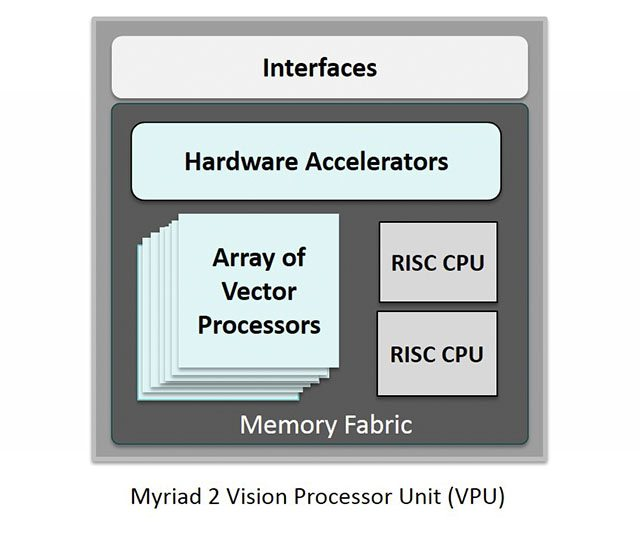
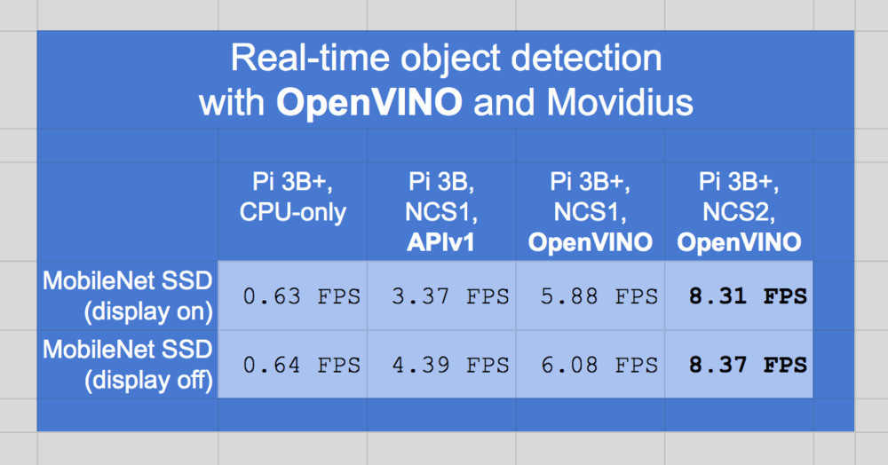

Install Open Vino on MacOS
Table of Contents
1. zsh
1.1. install
1: cd /Users/student 2: export PATH=/usr/local/bin:$PATH 3: brew install zsh zsh-completions 4: brew install zsh-syntax-highlighting 5: source /usr/local/share/zsh-syntax-highlighting/zsh-syntax-highlighting.zsh 6: sh -c "$(curl -fsSL https://raw.github.com/ohmyzsh/ohmyzsh/master/tools/install.sh)" 7: git clone --depth=1 https://github.com/romkatv/powerlevel10k.git ${ZSH_CUSTOM:-$HOME/.oh-my-zsh/custom}/themes/powerlevel10k 8: brew tap homebrew/cask-fonts 9: brew install font-meslo-for-powerline 10: git clone https://github.com/powerline/fonts.git --depth=1 11: cd fonts 12: ./install.sh 13: cd .. 14: rm -rf fonts 15: brew cleanup 16:
1.2. .zshrc
1: 2: # >>> conda initialize >>> 3: # !! Contents within this block are managed by 'conda init' !! 4: __conda_setup="$('/opt/anaconda3/bin/conda' 'shell.zsh' 'hook' 2> /dev/null)" 5: if [ $? -eq 0 ]; then 6: eval "$__conda_setup" 7: else 8: if [ -f "/opt/anaconda3/etc/profile.d/conda.sh" ]; then 9: . "/opt/anaconda3/etc/profile.d/conda.sh" 10: else 11: export PATH="/opt/anaconda3/bin:$PATH" 12: fi 13: fi 14: unset __conda_setup 15: # <<< conda initialize <<< 16: export TERM="xterm-256color" 17: ZSH_THEME="powerlevel10k/powerlevel10k" 18: source /usr/local/share/zsh-syntax-highlighting/zsh-syntax-highlighting.zsh
2. NCS2
「VPU」乃 Movidius 對自家處理器的稱為，全稱為 Vision Processing Unit「視覺處理器」。它是一枚專注於處理影像分析的處理器，與 CPU 需要處理程序、GPU 處理影像輸出等不同。它的工作比較單一，就是圖像識別，可說是把 CPU 與 GPU 混合處理的工作獨立出來，成為一枚新核心。
這次 Google Project Tango 與 Movidius 合作的處理器名為「Myriad 2」（MA2450），屬於第二代的產品，由台積電 TSMC 利用 28 納米製程生產，擁有每秒 3 萬億次浮點運算能力，並能夠同時處理 6 個 60 frame Full HD 影像內容輸入，在純視覺處理方面可以輕鬆擊敗 Nvidia 的 Tegra，而且它的共享內存只有2MB，比很多處理器的都要小。
在圖像識別上，VPU 能夠做到追蹤動態物件、實物測距及深度學習環境，這三大功能算是補足了現時電腦缺乏或比較難做到的東西。

Figure 1: Myraid 2 Vision Processor Unit (VPU)
2.1. 具備追蹤與繞行能力的無人機
VPU 的使用場景很多，例如他們最近也跟 DJI 合作，推出一款名為 Phantom 4 的無人機，此機通過 VPU 提供了偵測功能，協助 Phantom 4 擁有自行繞開障礙物的能力。
不過，Movidius 的 VPU 也不是完全沒有對手，例如 Intel 的 Real Sense 技術便以具備相同運算能力為目標，並在 Yunnec 無人機 Typhoon H 上實現了 360 度偵測、追蹤動態物件、自動繞行等功能，實現我們一直認為不太可能做到的無人機拍攝功能。
2.2. Intel 神經計算棒NCS2簡介
英特爾NCS 2由最新一代的英特爾VPU（視覺處理單元）支持–英特爾Movidius Myriad X VPU。這是第一個具有神經計算引擎的VPU，可提供額外的性能。諸如Caffe，Tensor Flow或MXNet之類的深度學習神經網絡可以與NCS2上的OpenVINO工具包集成。這些機器學習框架針對全新的深度神經網絡（DNN）推理引擎進行了優化，該引擎提供的性能是前一代的八倍。
借助電腦和Intel NCS2，開發人員可以啟動其AI和計算機視覺應用的開發，並在幾分鐘內執行。英特爾NCS2在標準USB 3.0上運行，不需要其他硬體，從而使用戶能夠無縫轉換由電腦訓練好的模型，然後將其部署到各種邊緣設備而不需連網或連雲。無論是開發智能相機，具有手勢識別功能的無人機，工業機器人，還是下一代智能家居設備，英特爾神經計算棒2都能為開發人員提供更快原型所需的功能。
2.3. 應用
因為能夠跑OpenVINO的硬體等級的CPU建議能在8核以上, 因為不是所有機器都有GPU, 所以只要在沒有GPU的機器上插入NCS2, 馬上就可以使用有GPU等級的演算法, 最常見的組合就是PC加NCS2或Resapberry Pi加NCS2。
試想一下,如果傳統的監控安防攝影機, 插了一支NCS2在上面, 就可以做人臉偵測, 物件辨識或車牌辨識, 是不是瞬間就把傳統的監控攝影機, 馬上變成了具AI功能的智慧安防攝影機, 這樣許多終端的設備, 就可以馬上從智障變成有智慧, 這不是挺完美的嗎？
這邊提供一個比較表, 原文如下,是用OpenVINO的toolkit執行MobileNet SSD時所做的比較, 可以看到NCS2比NCS1多了2.3個FPS,雖然不多, 但卻比樹莓派只用單顆CPU來跑MobileNet SSD時,多了整整8個FPS, 真的有達到加速的功能。


Figure 2: NCS2 performance
3. DNN如何在不同系統進行最佳化
現形深度學習架構面臨的第一個問題則是如何在異質化的計算系統上做計算速度上的最佳化。
目前深度學習的架構相當多種，並各有其特色。但這樣百家爭鳴的情況，卻引發了如巴別塔危機的混亂狀況1。
當我們開始進入深度學習世界時，最常會想知道的就是，到底要挑選哪一種框架來入門？
3.1. Frames
有如圖40-1和表格40-1顯示，目前在最大的開源社群Github上，可已找到20種星星數超過一千的深度學習框架，包含：TensorFlow、Keras、Caffe、PyTorch、CNTK、MXNet、DL4J、Theano、Torch7、Caffe2、Paddle、DSSTNE、tiny-dnn、Chainer、neon、ONNX、BigDL、DyNet、brainstorm、CoreML…等。
而排名第一的TensorFlow更有將近10萬個星星，可以得知，深度學習受到大家關注當選擇深度框架時，我們能從以下幾個面向來考慮，將分別介紹以下六個面向2。

Figure 3: 常見深度學習框架（圖片來源：OmniXRI整理製作）
目前有三大陣營：
- Keras：支援TensorFlow、Theano、MXNet、DL4J、CNTK，
- 微軟和Facebook聯盟推出ONNX：可支援Caffe2、CNTK、PyTorch
- Google的TensorFlow：在 2015 年發表
另外，雖然框架之間可以轉換，但不代表轉換後的執行效率會和直接使用某個框架一樣好，此時只能依實際需求來取捨是否拿彈性換取效能2。
3.2. Frame的選擇
一般而言，深度學習架構的使用者可以粗略分為兩類3：
- 一種是運用深度學習架構來進行概念驗證（Proof of Concept），因而需要快速實驗且評估不同的模型。
- 另一種則是希望將深度學習導入商業應用，將深度學習模型配置成應用程式（app），成為對一般民眾開放的服務平台。
然而，基於不同的使用需求，究竟該依何標準從不同的深度學習架構中選擇呢？
以研究為取向的使用者，對於深度學習架構的需求，最重要的考量即是快速上手，且容易除錯。透過可動態執行的直譯式語言，在嘗試或開發早期時，便可及早發現模型裡的臭蟲，避免浪費大量時間訓練一個錯誤的模型。因此，現行深度學習架構的一個共同處，即是支持一或多種直譯式語言的呼叫介面。其中，鑑於 Python 是目前最熱門的一個程式語言，在目前許多比較深度學習架構的部落格文章中，無論是由第三方公司所評比，或是部落客個人的努力，多將深度學習架構中是否包含 Python 的客戶端呼叫介面（Client Interface），視為一個加分條件。在這樣的考量，似乎在架構設計上，以動態計算圖（dynamic graph）為主要網路資料結構的 PyTorch 為最佳考量。
Keras 是一個深度學習的介面函式庫（API），而非深度學習架構。在早期，Keras 只有專注於開發建構在 Theano 上的高階 API 為主。以物件導向的方式，將建模的程式碼封裝成 layer，而利用堆疊一層一層的 Layer 物件來建立類神經模型，或又稱為 Layer-wise 為主的方式來建模。在 Tensorflow 發表後，人氣相當高的 Keras 便進而採用 Tensorflow 作為執行後端（backend），但在不同的深度學習的架構逐漸蓬勃發展後，又併入 Microsoft 的 CNLK，而成為一個通用化的深度學習介面。
Keras 作為一個深度學習架構的最上層，就如 Thomas 所言，將後端的原始碼封裝，使用者在建構類神經網路模型時，只需簡短的幾行程式碼便可完成，因此達到建模的簡易性。然而以 Layer-wise 為主的的建模方式通常缺乏彈性，在較為複雜的類神經網路，仍需要親自撰寫後端的原始碼，或甚至打破 Layer 的架構，重新編寫計算圖中的運算元。不過 Keras 所提供的便利性，對於許多深度學習入門者而言是非常寶貴的踏腳石，那些複雜的網路架構，如 MAC network (Hudson and Manning, ICLR 2018)，或 Capsule Network 就留給那些天才般的腦袋吧！
和 PyTorch 都在去年發表的，還有 Amazon 和 Microsoft 共同合作的開源專案，以 python 為主的 Gluon API。Amazon 的雲端服務使用的深度學習架構 MXNet 和 Microsoft 的 Cognitive Toolkit 都會使用 Gluon API 介面，不過目前還是以支援 MXNet 為主。
MXNet，由著名的開源專案搖籃 Apache 基金會所培育，亦是由多個開源專案演化而來，在 2015 年正式發表。除了 Gluon API 外，MXNet 更提供高度優化的 R 介面。如同 PyTorch 所標榜的，Gluon 也是使用所謂的動態計算圖，使用者無需再建模的時候，就先把計算圖建立好，反而透過如同錄影的方式，一步一步的執行，讓使用者在對梯度除錯時更加的容易。但同時，Gluon 也容許使用者，建立抽象式的符號計算圖，藉著事先優化已編譯好的深度網路架構，在執行速度上比動態計算圖更為快速。
Amazon 雲端服務支持的深度學習函式庫（圖片來源： AWS）
未來深度學習架構發展的趨勢，目前有兩個重要的走向備受到關注：
之一，是計算能力的提升。即使有良好的軟體設計框架來設計日漸複雜的類神經網路模型，缺乏強大的硬體計算能力，過於複雜的網路模型，只是精工雕琢，具有複雜紋路的美麗雕刻，卻不具有任何實際效用。 GPU 加入高效能運算的硬體計算行列，成為深度學習研究的加速器。然而雖然加快了執行速度（performance），但也提高了維持高效能計算在異質化系統執行的難處，於是乎，除了在硬體上力求革命性的突破，一個針對異質化設備做運算最佳化的編譯器，更顯重要。
之二，則是模型在不同架構間的交換檔案格式。鑑於，深度學習的相關函式庫與架構日漸蓬勃發展，顯然地，一個受各方認可的檔案交換格式制定，將會有利於以建構的深度類神經網路模型在不同的架構中使用，有利於重製模型成果以及比較各個架構的速度和實踐細節。
3.3. 巴別塔危機
由於影像模型因為訓練不易或其受限於計算平台的硬體架構，所以經常需要使用他人以訓練好的類神經網路模型，在其上層加入自己的分類器層，以 transfer learning 的方式來完成任務。雖然感謝共享模型的普遍，然而因為模型的建置架構不同，再加上許多即使輸出權重，也因為使用高階 API，以物件導向方式建構的模型黑箱化，所以在從硬碟讀入權重時，通常會發生許多問題。
為了解決這個問題，於是出現了 Open Nueral Network Exchange （ONNX）開源類神經網路模型交換格式這個計畫。目前參與這個計畫的 Facebook，Microsoft 和台灣的深耕編譯器與虛擬機器的 skymizer 公司等。但，很不幸地，Google 並不在其中的名單中。雖然 Google 並不對 ONNX 做直接支援，但還是有熱心的編程者寫了 Tensorflow 到 ONNX 格式的轉換程式碼。
ONNX實作DEMO
4. IR
中介碼（IR，intermediate representation）是一種資料結構，可將輸入的資料建構為一個電腦程式，也可以將一部份或是所有輸出的程式反推回輸入資料。這意味著中介碼將會保留一些輸入資料的資訊，同時擁有更進一步註釋或是快速查詢的功能4。
舉一個典型的例子，它是現代許多編譯器所擁有的功能，它可將一段程式轉換成一個中間層的Graph資料結構，Graph可進行數據流分析，而且可在建立實際運行的CPU指令列表之前進行重組（re-arrangement），這種中間層的使用方式，允許像是LLVM的編譯系統可以同時擁有許多不同的前端語言編譯器，而且可以產生許多不同架構系統的機器碼4。
4.1. Interpreter v.s. compiler
- 所謂的編譯，是指原始的程式碼 (source code) 會經由編譯器 (compiler) 轉換成目的碼 (object code) 後，再由連結器 (linker) 轉換成可執行的二進位碼，使用編譯器的語言稱為編譯式語言，C 和 C++ 就是編譯式語言的代表作。以及像是 C# , LISP, Pascal, VB, Delphi 等需要編譯器才能轉換成可執行碼 (executable code) 的語言。編譯式語言多半會是靜態語言 (static language)，它們擁有事先定義的型別，型別檢查 (type check) 與高效能的執行速度等特性。
所謂的直譯，是指原始的程式碼只要經過直譯器 (Interpreter) 即可轉換成可執行碼，由於它們不需要經由編譯器，而是在執行時才會將原始碼直譯成執行碼，所以速度上會比編譯與連結器產生的執行碼要慢，效能會有一部份取決於直譯器的速度，而直譯式語言多半以動態語言 (dynamic language) 為主，具有靈活的型別處理 (鬆散型別)，動態生成與程式彈性，但速度會比編譯式的要慢一些，像是 JavaScript, Python, Ruby, PHP, ASP 等等，都是直譯式語言。
使用編譯式語言產生的程式幾乎都是可獨立執行的，因為它們都是由Compiler進行型別／語意等檢查，以及經過連結器的處理，程式碼幾乎可以直接存取系統服務 (system service) 與 APIs，所以執行效率會特別好；直譯式語言則是必須依賴一個執行環境 (execution context)，語言可用的功能由這個執行環境提供，例如 JavaScript 只能使用瀏覽器提供的功能，而 PHP 只能使用 php.exe 實作的功能一樣，它們無法獨立執行 (或是看起來像獨立，實際上卻是系統自動在背後建立執行環境，如 HTML Application)。
.NET Framework 本身的語言則是包含兩種成份 (Java 也是)，一開始 .NET Framework 內的編譯器 (csc.exe, vbc.exe) 是扮演編譯器的角色，它會將程式編譯成中介碼 (Intermediate Code, Java 則是bytecode)，而在執行時，由 CLR (JVM) 進行即時編譯 (JIT Compilation)，將中介碼轉換成機器碼 (Machine code)，才可以在作業平台上執行，所以 CLR (JVM) 扮演的是直譯器的角色，而其執行環境則是整個作業系統，它亦有編譯式語言的特性，但速度會比純種的編譯式語言 (C/C++) 要慢一些，原因是在 JIT Compilation 在第一次執行時會啟動，以將程式轉成機器碼，而純種的編譯式語言則在編譯連結完成時就已經是機器碼，故不需要 JIT 處理。
4.2. DNN系統架構
一個深度學習架構通常包含了以下架構：

在上圖中，我們可以看到粗略分為屬於軟題相關的如，使用者 API（User API），執行系統單元（System components）和於硬體相關（computer architecture）。使用者 API，包含如何實作類神經網路運算元，學習演算法以及梯度數值運算的部分。在使用者 API 之上，則是包括了如 Keras 更為抽象的 API。
使用者 API 的實作方式，目前深度學習架構的趨勢則是利用計算圖的方法來作為資料結構。而計算圖的設計方式，則使深度學習的架構朝向兩個不同的方向發展：一個是以 PyTorch 為主的動態計算圖，另一個則是以 Tensorflow 為主的靜態計算圖。
4.3. 計算圖
計算圖的發展，可以追朔到三十多年前的一個創新主意，那就是針對類神經網路或機械學習演算法所發展的自動梯度計算方式（Automatic Differentiation）。類神經網路的訓練，依賴兩個步驟：
- 第一個步驟是正向傳播（feed forward），就是將訓練資料餵送給類神經網路，藉著往上攀爬類神經網路內，層層疊起的網路結構，最後到達最上層的輸出神經元。
- 第二個步驟則是反向傳播（back propagation），將類神經網路最上層的輸出，與正確的分類標籤或數值代入損失函數後，計算出的誤差值，需要再次由上而下，對各層參數取偏微分計算，以計算該層參數對誤差的個別貢獻後，再往下回溯深不可測的層層堆疊網絡，透過連鎖規則（chain rule），更新每一層的權重和偏移參數值。
然而，正向或反向的傳播計算，所仰賴的是一個相當基礎的微分技巧，chain rule 來執行。而計算圖，則是將正向傳播的計算順序，以一個有方向的圖來表示。在計算圖中，每一個節點都是一個運算元，或代表資料的張量（tensor）。節點與節點之間，具有方向的連結，則是運算元執行的順序。下圖就是一個非常簡單的計算圖。
5. Github
- 參考: openvinotoolkit / openvino_notebooks
Create and activate a Virtual Environment
conda create --name ai4y python=3.7 --yes conda activate ai4y conda create --name openvino_env conda activate openvino_env
Clone the Repository
1: cd ~/Desktop 2: git clone https://github.com/openvinotoolkit/openvino_notebooks.git 3: cd ~/Desktop/openvino_notebooks
Install the Packages
1: python -m pip install --upgrade pip 2: pip install -r requirements.txt
結果: 安裝openvino-dev時失敗
1: Collecting openvino==2021.4.0 2: Using cached openvino-2021.4.0-3839-cp39-cp39-macosx_10_15_x86_64.whl (25.8 MB) 3: ERROR: Cannot install openvino-dev[onnx,tensorflow2]==2021.4.0, openvino-dev[onnx,tensorflow2]==2021.4.1 and openvino-dev[onnx,tensorflow2]==2021.4.2 because these package versions have conflicting dependencies. 4: 5: The conflict is caused by: 6: openvino-dev[onnx,tensorflow2] 2021.4.2 depends on tensorflow~=2.4.1; extra == "tensorflow2" 7: openvino-dev[onnx,tensorflow2] 2021.4.1 depends on tensorflow~=2.4.1; extra == "tensorflow2" 8: openvino-dev[onnx,tensorflow2] 2021.4.0 depends on tensorflow~=2.4.1; extra == "tensorflow2" 9: 10: To fix this you could try to: 11: 1. loosen the range of package versions you've specified 12: 2. remove package versions to allow pip attempt to solve the dependency conflict
- 修正原本的requirements.txt
刪除第一行 Install Intel® Distribution of OpenVINO™ toolkit from Anaconda Cloud
https://docs.openvino.ai/2021.3/openvino_docs_install_guides_installing_openvino_conda.html
1: conda install openvino-ie4py -c intelInstall the virtualenv Kernel in Jupyter
1: python -m ipykernel install --user --name openvino_envLaunch the Notebooks!
To launch a single notebook, like the Monodepth notebook
1: jupyter notebook notebooks/201-vision-monodepth/201-vision-monodepth.ipynbTo launch all notebooks in Jupyter Lab
1: jupyter lab notebooksIn Jupyter Lab, select a notebook from the file browser using the left sidebar. Each notebook is located in a subdirectory within the notebooks directory.
5.1. conda基本語法
5.1.1. 檢查目前環境
1: conda env list
# conda environments: # base * /Users/letranger/opt/anaconda3 ai4y /Users/letranger/opt/anaconda3/envs/ai4y myEnv /Users/letranger/opt/anaconda3/envs/myEnv
5.1.2. 建立新環境
1: conda create --name myEnv python=3.7
WARNING: A conda environment already exists at '/Users/letranger/opt/anaconda3/envs/myEnv' Remove existing environment (y/[n])?
5.1.3. 啟動虛擬環境
1: activate myEnv
5.1.4. 刪除虛擬環境
1: conda remove --name myEnv
6. localhost
- Install cmake
- 東西在 NAS
- 東西在 NAS
Add /Applications/CMake.app/Contents/bin to path (for default install)
edit .bashrc file,加入
1: export PATH="/Applications/CMake.app/Contents/bin:$PATH"
- Install openvino tool kit
- NAS
- NAS
vi ~/.bash_profile
加入
1: source /opt/intel/openvino_2021/bin/setupvars.sh
Configure the Model Optimizer¶
1: cd /opt/intel/openvino_2021/deployment_tools/model_optimizer/install_prerequisites 2: sudo ./install_prerequisites.sh
Upgrade PyYAML
1: sudo -H pip3 install --ignore-installed PyYAMLTesting
1: cd /opt/intel/openvino_2021/deployment_tools/demo 2: sh demo_benchmark_app.sh 3: sh demo_security_barrier_camera.sh 4: sh demo_squeezenet_download_convert_run.sh
- Install cv2
1: pip3 install --user opencv-pythonCollecting opencv-python Using cached https://files.pythonhosted.org/packages/8b/9f/879a48a4d4361d1784728be8543f5c8b2b681db500c9e6854f0654645c3d/opencv_python-4.5.4.58-cp37-cp37m-macosx_10_15_x86_64.whl Collecting numpy>=1.14.5 (from opencv-python) Using cached https://files.pythonhosted.org/packages/5d/e4/1178a2e82d1c9abd696496d4f0fc2d09e346b43101829e08eb3ee558fd5d/numpy-1.21.4-cp37-cp37m-macosx_10_9_x86_64.whl Installing collected packages: numpy, opencv-python Successfully installed numpy-1.21.4 opencv-python-4.5.4.58
- Install cv2
copy openvino to site_package
1: cd /Users/letranger/opt/anaconda3/lib/python3.8/site-packages 2: cp -r /opt/intel/openvino_2021.4.689/python/python3.8/openvino .
7. Docker
7.1. Introduction
- 一般大家買來的電腦上大部份都是安裝微軟的Windows作業系統，如果遇到要開發Liunx相關應用程式時，可能有人會選擇安裝二個作業系統，在重新開機時選擇要執行那一種。雖然這種方式可完全掌控硬體資源（如CPU, GPU, HDD, RAM）及開發環境（相依套件、函式庫），但每次切換作業系統都要重新開機，實在太麻煩。
- 為解決這個問題，於是就有人提出在主作業系統(Host OS)上安裝一個虛擬機(Virtual Machine, VM)監視器(Hypervisor)，如VMWare, VirtualBox這類工具，方便安裝其它作業系統或者多種不同的開發環境，如Fig. 1左圖所示。雖然這樣很方便同時使用兩種以上作業環境，但硬體資源要和主系統共享且額外多了一些虛擬化轉換工作，所以執行效能較差，甚至有些硬體（如GPU）無法直接使用，導致部份應用程式無法運作。
- 很多在Linux環境下開發程式的人都知道，它的應用程式比較不像在Windows下一個執行檔(.exe)或搭配幾個動態函式庫(.dll)就能順利執行，各種開發工具及相依套件包常會有版本不相容問題。本來在Linux上也可以執行虛擬機(VM)來區隔不同開發環境，但效能實在太差，所以便有人開發出以一種類似大船載送貨櫃，貨櫃裝載各種不同大小、形狀貨物的執行環境，稱為Docker。
- 如圖4所示，容器(Containers)就像貨櫃是用來裝載映像檔(Images)這樣的貨物，再由Docker引擎（大船承載）執行的概念。表面上看起來和VM沒什麼不同，但最大差別就是它很輕量，不透過虛擬化，直接驅動硬體資源，共用作業系統資源，所以啟用一個容器和映像檔僅須數秒和載入一個VM客作業系統核心要數分鐘差異頗大。以往Docker只能在Linux上運作，近年來已有支援Window及Mac OS的版本出現了。
- 一般Docker使用上極為方便，供應商僅需將欲提供的映像檔(Images)推上(Push) 公開映像檔倉儲(Repository / Docker Hub)，使用者再去拉下(Pull)想要的映像檔即可執行，如圖4右圖所示。

Figure 4: VM和Docker架構差異比較圖。(OmniXRI, Jan. 2021整理製作)
7.2. Install Docker
Install Docker on Mac
1: brew install --cask --appdir=/Applications docker==> Downloading https://desktop.docker.com/mac/main/amd64/70708/Docker.dmg ==> Installing Cask docker ==> Moving App 'Docker.app' to '/Applications/Docker.app' ==> Linking Binary 'docker-compose.bash-completion' to '/usr/local/etc/bash_completion.d/docker-compose' ==> Linking Binary 'docker.zsh-completion' to '/usr/local/share/zsh/site-functions/_docker' ==> Linking Binary 'docker.fish-completion' to '/usr/local/share/fish/vendor_completions.d/docker.fish' ==> Linking Binary 'docker-compose.fish-completion' to '/usr/local/share/fish/vendor_completions.d/docker-compose.fish' ==> Linking Binary 'docker-compose.zsh-completion' to '/usr/local/share/zsh/site-functions/_docker_compose' ==> Linking Binary 'docker.bash-completion' to '/usr/local/etc/bash_completion.d/docker' 🍺 docker was successfully installed!
- Pull from Github
7.3. Testing Docker
1: docker run hello-world
由於第一次執行，本機端並沒hello-world這個映像檔，所以會自動到Docker Hub去找，並下載回來。如果成功會看到下面畫面。
7.4. 使用 Docker 安裝 OpenVINO
- Intel OpenVINO 對應不同操作系統(Windows, Linux, macOS, RaspbianOS)提供很多種安裝方式。近年來隨著各種容器技術興起，也開始支持像 Docker 這類直接安裝映像方式，充份解決用戶不熟悉安裝步驟及滿足開發者需要不同版本或開發環境隔離需求。
- Intel OpenVINO 目前在 Docker Hub 上提供了多個映像讓使用者下載(pull)，其中有兩組使用率較高，openvino/workbench 用戶不需編程，直接操作圖型化接口就可測試各種模型的效率，openvino/ubuntu18_dev 則提供一般 Ubuntu 18.04 (Linux) 開發環境。
- 首先執行下列指令將映像文件 openvino/ubuntu18_dev 從 Docker Hub 拉下（下載）至本機端。由於文件數量較多且較大（解壓縮後約 7.22GByte），所以根據網絡速度可能需要等待數分鐘到數十分鍾不等。
7.4.1. 下載、執行image
1: docker pull openvino/ubuntu18_dev
若想啟動映像文件，根據不同硬件執行下列命令。
- Intel CPU
1: docker run -it --rm openvino/ubuntu18_dev
- Intel GPU
1: docker run -it --rm --device /dev/dri openvino/ubuntu18_dev
- NCS2（單個 VPU）
1: docker run -it --rm --device-cgroup-rule='c 189:* rmw' -v /dev/bus/usb:/dev/bus/usb openvino/ubuntu18_dev
- HDDL（多個 VPU）
1: docker run -it --rm --device=/dev/ion:/dev/ion -v /var/tmp:/var/tmp openvino/ubuntu18_dev
7.5. Docker常用指令
docker info
1: docker infoClient: Context: default Debug Mode: false Plugins: buildx: Build with BuildKit (Docker Inc., v0.6.3) compose: Docker Compose (Docker Inc., v2.1.1) scan: Docker Scan (Docker Inc., 0.9.0) Server: Containers: 4 Running: 1 Paused: 0 Stopped: 3 Images: 3 Server Version: 20.10.10 Storage Driver: overlay2 Backing Filesystem: extfs Supports d_type: true Native Overlay Diff: true userxattr: false Logging Driver: json-file Cgroup Driver: cgroupfs Cgroup Version: 1 Plugins: Volume: local Network: bridge host ipvlan macvlan null overlay Log: awslogs fluentd gcplogs gelf journald json-file local logentries splunk syslog Swarm: inactive Runtimes: io.containerd.runc.v2 io.containerd.runtime.v1.linux runc Default Runtime: runc Init Binary: docker-init containerd version: 5b46e404f6b9f661a205e28d59c982d3634148f8 runc version: v1.0.2-0-g52b36a2 init version: de40ad0 Security Options: seccomp Profile: default Kernel Version: 5.10.47-linuxkit Operating System: Docker Desktop OSType: linux Architecture: x86_64 CPUs: 6 Total Memory: 1.939GiB Name: docker-desktop ID: L33G:3G5F:HIHY:FWNH:25ZM:DU35:IH2S:K4AD:6VKJ:UL3Z:IBW4:ZZY7 Docker Root Dir: /var/lib/docker Debug Mode: false HTTP Proxy: http.docker.internal:3128 HTTPS Proxy: http.docker.internal:3128 Registry: https://index.docker.io/v1/ Labels: Experimental: false Insecure Registries: 127.0.0.0/8 Live Restore Enabled: false- docker pull xxxxx
從Docker Hub拉下（下載）映像檔 [映像檔名稱xxxxx] docker images
檢查目前已下載之映像檔
1: docker imagesREPOSITORY TAG IMAGE ID CREATED SIZE openvino/ubuntu18_dev latest 5909980b90ae 8 days ago 5.63GB docker/getting-started latest eb9194091564 9 days ago 28.5MB hello-world latest feb5d9fea6a5 8 weeks ago 13.3kB
docker ps
檢查目前正在執行的container
1: docker psCONTAINER ID IMAGE COMMAND CREATED STATUS PORTS NAMES 29c22b186088 openvino/ubuntu18_dev "/bin/bash" 9 hours ago Up 9 hours compassionate_heyrovsky
docker ps -a
查看所有的container
1: docker ps -aCONTAINER ID IMAGE COMMAND CREATED STATUS PORTS NAMES 7ce134ba2f64 hello-world "/hello" 16 minutes ago Exited (0) 16 minutes ago lucid_sinoussi 29c22b186088 openvino/ubuntu18_dev "/bin/bash" 9 hours ago Up 9 hours compassionate_heyrovsky 43ae292225cb docker/getting-started "/docker-entrypoint.…" 24 hours ago Created charming_hofstadter 07b136cc7716 docker/getting-started "/docker-entrypoint.…" 24 hours ago Exited (0) 14 minutes ago goofy_goldwasser
docker start [Container ID]
啟動docker container
1: docker start 07b136cc7716 2: docker ps
07b136cc7716 CONTAINER ID IMAGE COMMAND CREATED STATUS PORTS NAMES 29c22b186088 openvino/ubuntu18_dev "/bin/bash" 9 hours ago Up 9 hours compassionate_heyrovsky 07b136cc7716 docker/getting-started "/docker-entrypoint.…" 24 hours ago Up 13 seconds 0.0.0.0:80->80/tcp goofy_goldwasser
docker stop [Container ID]
停止執行Container
1: docker stop 07b136cc771607b136cc7716
docker rm [Container DI]
刪除Container
1: docker rm 7ce134ba2f64 2: docker ps -a
7ce134ba2f64 CONTAINER ID IMAGE COMMAND CREATED STATUS PORTS NAMES 29c22b186088 openvino/ubuntu18_dev "/bin/bash" 11 hours ago Up 11 hours compassionate_heyrovsky 43ae292225cb docker/getting-started "/docker-entrypoint.…" 26 hours ago Created charming_hofstadter
- docker rmi [Image ID]
刪除 image, 刪除 image 前必需將透過該 image 所產生的 container 移除 docker container ls
List containers
1: docker container lsCONTAINER ID IMAGE COMMAND CREATED STATUS PORTS NAMES 29c22b186088 openvino/ubuntu18_dev "/bin/bash" 9 hours ago Up 9 hours compassionate_heyrovsky
7.6. 利用公開模型 MobileNet 執行圖像分類
利用 Docker 安裝好OpenVINO 工作環境後就可以開始進行推理(Inference)工作了。OpenVINO 除了提供多種預訓練好的模型外[11]，另外也支持很多不同框架 (Caffe/Caffe2, PyTorch, TensorFlow, MXNet, ONNX 等)產生的公開模型[12]，也稱為「Open Model Zoo」，其中包含圖像分類、對象偵測、圖像分割、人臉識別、人體 姿態、深度估測、圖像填補、風格轉移、動作識別、圖像著色、聲音分類、語音 識別、圖像翻譯等公開模型。
使用這些模型前須先下載並執行優化，最後產生 OpenVINO 推理時所需的中間表示文件(Intermediate Representation, IR)，即模型描述文件(.xml)及參數權重文件(.bin)，存放在/opt/intel/openvino/public/模型名稱/FP16(或 FP32, INT8)路徑下。
7.7. mobilenet 圖像分類
7.7.1. 下載openvion docker image
啟動 Docker 並指定映像在 Intel CPU 上執行，以 root 身份執行，同時指令顯示器和系統共享，方便 OpenCV 執行imshow()能正常工作
1: docker run -itu root:root --rm -v /tmp/.X11-unix:/tmp/.X11-unix -e DISPLAY=$DISPLAY openvino/ubuntu18_dev
7.7.2. 下載模型
1: python3 /opt/intel/openvino/deployment_tools/tools/model_downloader/downloader.py --name mobilenet-v1-1.0-224
7.7.3. 優化模型
優化mobilenet-v1-1.0-224 並產出中間表示(*.xml, *.bin)文件，FP16/FP32 格式於 /opt/intel/openvino/deployment_tools/public/模型名稱路徑下
1: python3 /opt/intel/openvino/deployment_tools/tools/model_downloader/converter.py --name mobilenet-v1-1.0-224
7.7.4. 輸入圖片，測試推理
1: python3 /opt/intel/openvino/inference_engine/samples/python/classification_sample_async/classification_sample_async.py -m /opt/intel/openvino/public/mobilenet-v1-1.0-224/FP16/mobilenet-v1-1.0-224.xml -i /opt/intel/openvino/deployment_tools/demo/car.png --labels /opt/intel/openvino/deployment_tools/demo/squeezenet1.1.labels
7.7.5. 換成其他汽車圖片
- 切換到host下載圖片, ~/Downloads/pickup.jpg
查詢container ID
1: docker psCONTAINER ID IMAGE COMMAND CREATED STATUS PORTS NAMES 29c22b186088 openvino/ubuntu18_dev "/bin/bash" 9 hours ago Up 9 hours compassionate_heyrovsky 07b136cc7716 docker/getting-started "/docker-entrypoint.…" 23 hours ago Up 23 hours 0.0.0.0:80->80/tcp goofy_goldwasser
將下載的圖片複製到container中
1: docker cp ~/Downloads/pickup.jpg 29c22b186088:/opt/intel/openvino/deployment_tools/demo- 重新測試推理
7.8. Docker References
8. Uninstallation OpenVino on Mac
執行openvino_toolkit_uninstaller.app:
1: /opt/intel/openvino_2021